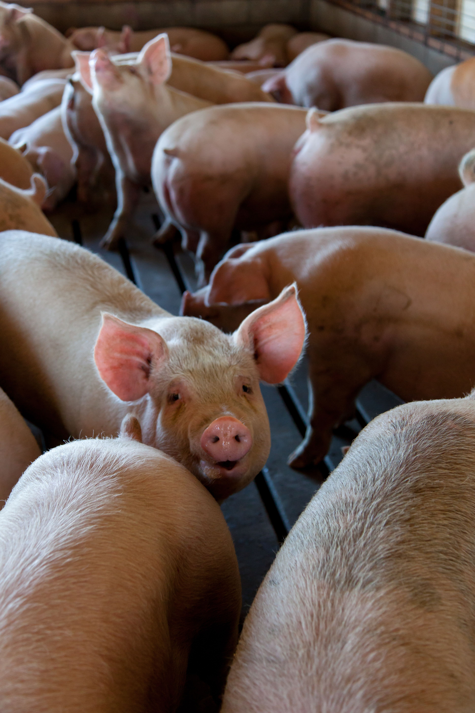
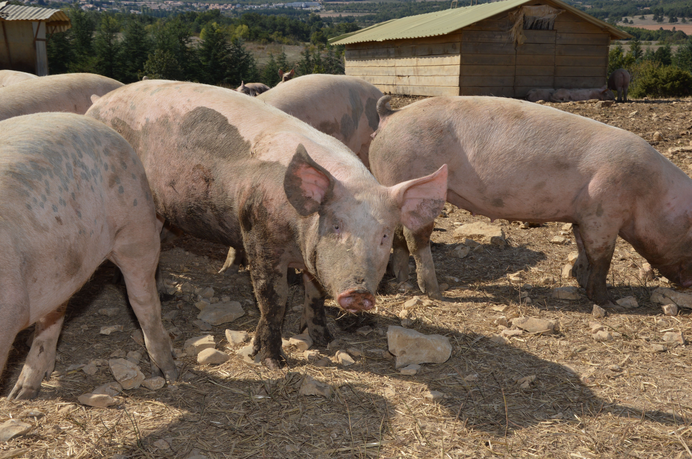
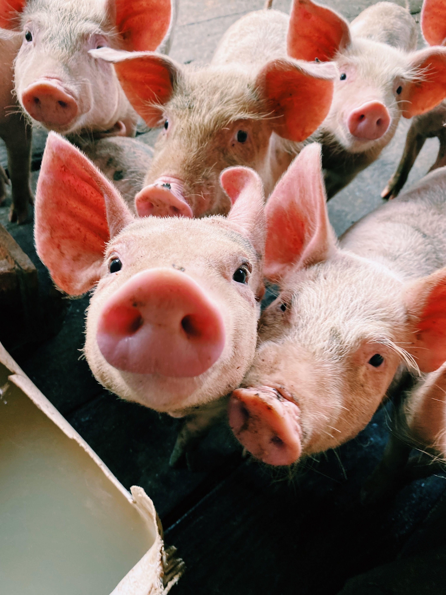
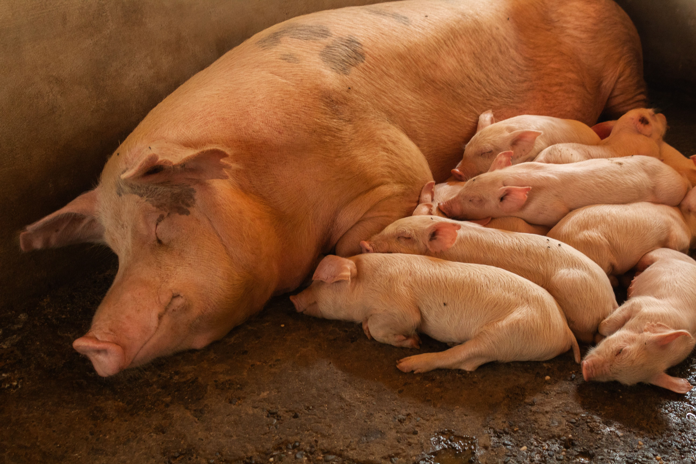
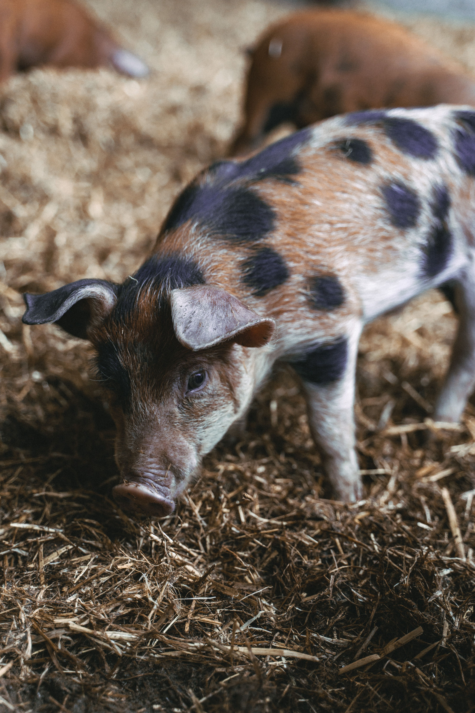
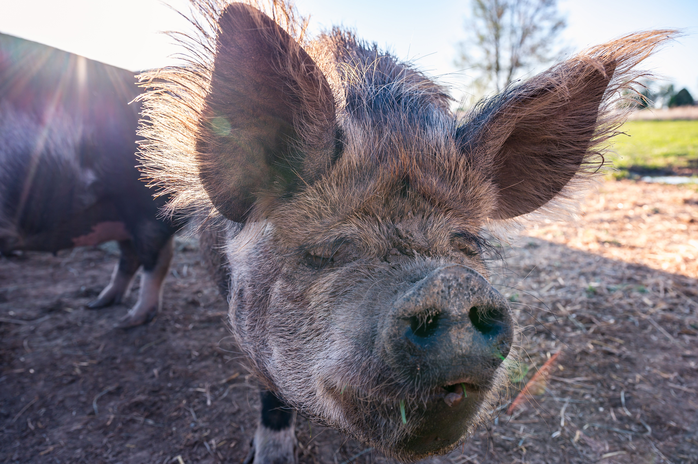

Pig Breeding
High-quality breeding stock selected for growth, fertility and productivity.
Learn More →Healthy Pigs. Better Farming. Greater Future.
Every animal leaves with a written health record.
Large White & Landrace crosses bred for growth.
Low-stress delivery across Kamuli and beyond.
Free guidance through your first month.
AVORA Pig Farming is a modern pig farm in Kamuli District, Uganda, breeding strong, disease-free pigs that deliver better growth and higher returns.
We support farmers and customers with quality stock, reliable information and genuinely excellent service — the same standard we set with our first two sows in 2018.
Four ways we help farmers build a herd that pays.
High-quality breeding stock selected for growth, fertility and productivity.
Learn More →Healthy weaned piglets from strong bloodlines at fair, transparent prices.
Learn More →Proven, fertile boars available for natural mating services.
Learn More →Hands-on guidance on management, feeding, housing and animal health.
Learn More →Message us on WhatsApp for live pricing and availability.
* Prices vary with age, weight and season. WhatsApp us for today's rate.
A look at everyday life on the farm.








AVORA started small — a family plot, two breeding sows, and a plan to do things properly from day one.
We expanded onto 10 acres of pasture and installed clean, reliable water for the herd year-round.
Our breeding stock and piglet health protocols earned recognition from local agricultural bodies.
Today AVORA supplies piglets and genetics to farmers across Kamuli and beyond — same standard as sow number one.
We primarily raise Large White and Landrace crosses — well suited to Uganda's climate and known for excellent growth rates and mothering ability.
Piglets are weaned at 8 weeks and ready at 10–12 weeks, fully vaccinated, dewormed and eating solid feed independently.
Yes — we deliver across Kamuli District and neighbouring areas with safe, low-stress transport. Fees vary by distance.
Absolutely. Visit during opening hours (Mon–Sat), see the facilities, meet the sows and choose your piglets in person.
Every piglet comes with a health record of vaccinations and deworming, plus our guidance through its first month with you.
Yes — hands-on training on feeding, housing, disease prevention and breeding management, at our farm or yours.
Kamuli District, Uganda — along the Jinja–Kamuli road, 2 km from town centre.
Mon–Sat: 7:00 am – 5:00 pm
Sunday: closed for farm rest"Healthy pigs, better farming, greater future."